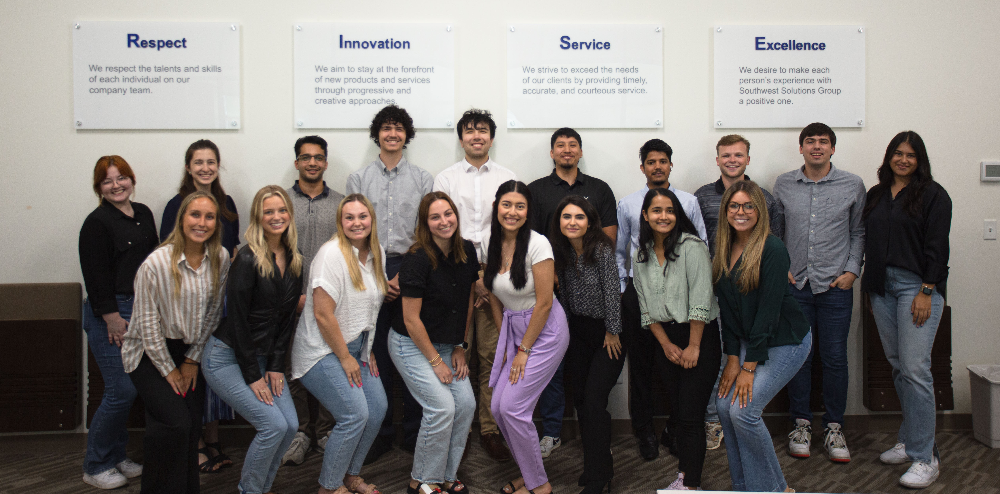

Southwest Solutions Group is a medium sized company based in Lewisville, TX that essentially makes people
and space work better together. I had the incredible opportunity to intern for SSG
this past summer under Todd Richardson & Eric Bridges as a Software Developer Intern. During this internship, I
learned not only how to become a better Computer Scientist, but also how to be a better employee, leader, and overall man.
Throughout my 12 week internship at SSG, I learned an absurd amount of information regarding web development,
databases, version control, and working with a team to achieve a goal. Below is a picture of the Summer 2023 class
of Summer interns at SSG

To go more indepth into my experience at SSG, I architecturally redesigned an internal
E-commerce web application used by over 150 employees, I fostered the beginning stages of development of
an internal asset tracking website to ensure equipment is properly return following its distribution, and
I also collaborated with 17 other interns to design, code, and host a public web application to sell a company cookbook.
My contributions towards SSG are minimal, but definitely notable. Everyday I am grateful that I even had the
opportunity to intern for such a well respected and trusted company. I could spend hours talking about the
things I learned during this 12-week stint, and for that, my time as a Software Developer Intern is quite unforgetable.
<----
Signet